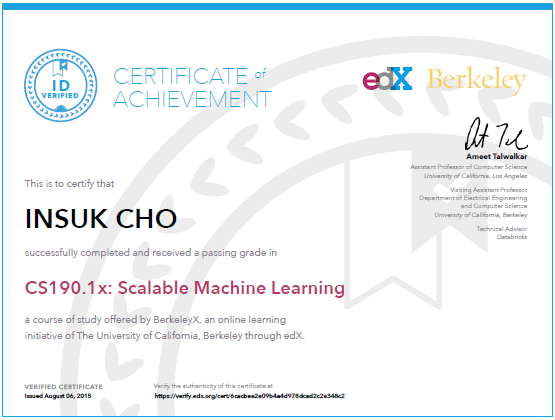
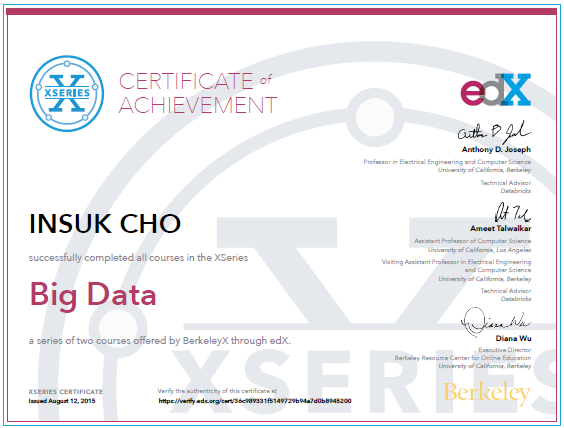
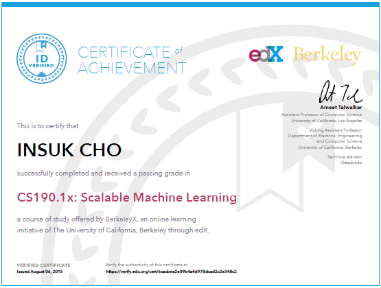
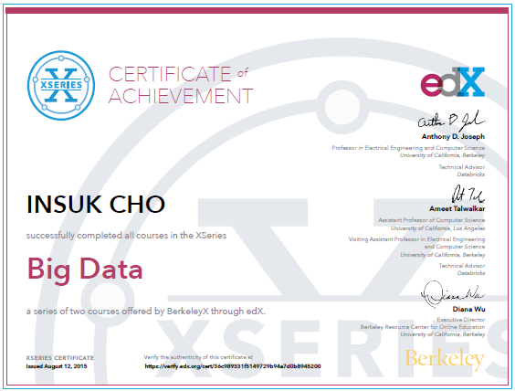

Welcome, I am Insuk Cho.
Insuk is more than 19 years experienced Software Engineer in South Korea & United States. Currently, he is working for @Elastic as a Principal Support Engineer & Solution Tech Lead. Before joining to Elastic, most of the experiences are based on B2B enterprise project in finance, manufacturing and power plants using Java & Spring framework & Python. He also has the interests in machine learning algorithms for prediction future abnormal behavior for timeseries data. He was an Agile/Lean evangelist and a dev lead in Agile software development environment on Scrum, TDD, pair programming, CI/CD, lean product development with cross-functional team. Now, he is falling love in digital normad life and want to share his experience to the community in South Korea from Hawaii. ;)
He loves to share what he has learned, so he wrote 5 books as an author talking about python programming for novice programmer and Node.js programming for the actual business field, translated 3 books and supervised 2 books. Currently, he is writing the textbook style book for students to learn data analysis with real use cases. And also trying to write helpful articles for making better software development environment in South Korea. If you have interest, check this blog and his Youtube channel, https://www.youtube.com/c/ChoChris/.
He has great experience to work with global top engineers @ Pivotal Labs San Francisco office as a product manager and a developer and also with great engineers from Germany, U.K, Belarus, India and so on. Currently, he keeps looking for great opportunity to work with the professional seasoned global top engineers to help and learn their business as a principal level software engineer with various real world agile experience.
Publications
Author


|
|
Translated


|
Supervised


|
Skill Set
Strong:
Elastic Stack(Elasticsearch, Kibana, Logstash, Beats), Elastic Cloud,
Elasitc Observibility Solutions (APM, Elastic Agents & Fleet)
Elastic Enterprise Search solutions (App/Site/Workplace Search with Crawler)
Java, Spring (Web, Data, Boot, Cloud),
Python, JPA & Hibernate, Jenkins, Git, Github, Bitbucket, Jira, PivotalTracker, SubVersion,
Maven, Oracle DBMS(w/ PL/SQL), Tomcat, jetty and Gigaspace XAP
Experienced:
JavaScript(Backbone, D3, RxJS, mori, lodash, etc), Heroku, Pivotal Cloud Foundry, Confluence,
Gradle, WebLogic, JBoss AS, JBoss Infinispan, MongoDB and PostgreSQL
CERTIFICATIONS:
Certified Scrum Developer(2019), Certified Scrum Master(2016), Certified Scrum Product Owner(2016), edX XSeries Certificate for Big Data (2015), SCJP (2007) & SCWCD (2009)

 



Recent Projects
Global Technical Support for all of Elastic product Agile transfer project paring with Pivotal Labs' engineers Doosan Remote Monitoring System w/ abnormal detection for Thermal Power Plant Samsung Electronics Global MES 2.0 Project Samsung Insurance Parallel Processing Online Module Framework Project
Patents
- Plant fault detection learning system and method | PCT/KR2016/009554 | United States
- Plant fault detection system and method | 10-2016-0055409 | South Korea
- Plant fault detection learning system and method | 10-2016-0055411 | South Korea
- Auto learning system and method for plant fault detection | 10-2016-0055622 | South Korea
SELECTED TALKS IN PUBLIC
- Play with Elastic APM (Elastic community day 2020)
- Python Variables (PyCon Korea 2019)
- One more remote working story (IBM Developer Day 2018, IBM)
- The world of Python (Digital Friday talk in 2018, KDB Bank)
- Python Fundamentals (Python deep learning offline class 2018, UNIST)
- Python vs Java (PyCon Korea 2017)
- Build the RIGHT Thing - LEAN & AGILE practice @ Pivotal Labs SF (SPRING CAMP 2017)
- The possibility of Python (SAMSUNG SDS Developer Conference OpeniT 2015, SAMSUNG SDS)
- Node.js introduction (SAMSUNG SDS Developer Conference OpeniT 2013, SAMSUNG SDS)
- Anyframe Enterprise Java Center-Cut (Anyframe AppDirections 2010, SAMSUNG SDS)